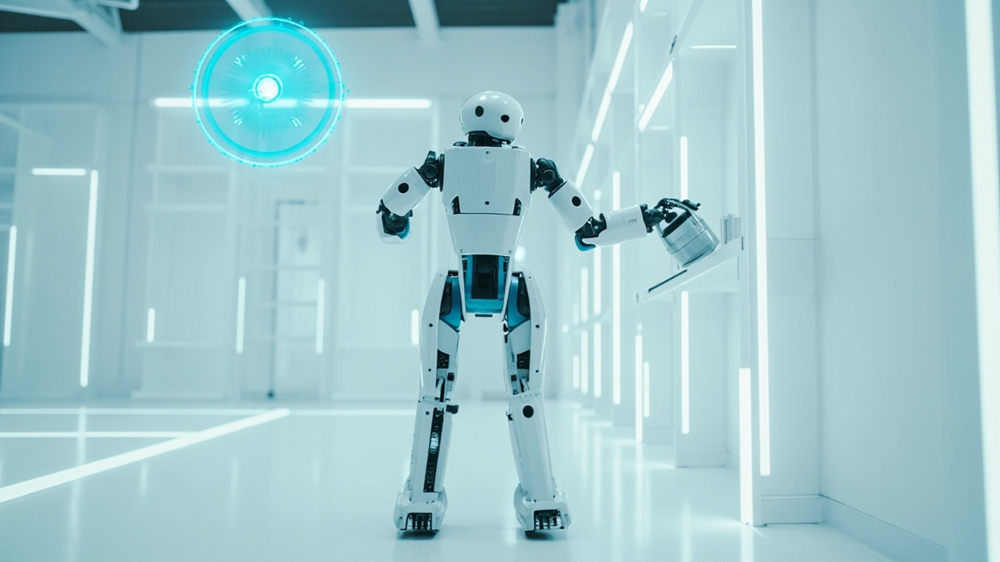

從雙腳到指尖：Google DeepMind 讓人形機器人真正動起來

Google DeepMind 發布 Gemini Robotics 2，首個能控制整個人形機器人——從雙腳到指尖——的視覺語言動作（VLA）模型。不再受限於桌面上半身操控，機器人可以走路、蹲下、伸手、搬物件，還能與其他機器人協作完成複雜任務。
Gemini Robotics 2 包含三個層次：旗艦 VLA 模型（完整全身控制）、Gemini Robotics-ER 2（泛化能力更強，適合新環境商業應用）、Gemini Robotics 2 Accelerated（低延遲高速版本）。同一模型可控制從桌面機械臂到完整人形機器人的各種形態。
以往模型只控制上半身桌面任務，Gemini Robotics 2 首次擴展到全身運動，包括走路、蹲下、伸展、重心轉移，並保留雙手精細操控。在 Apollo 2 上的演示中，輸入「把澆水壺放到底部架子的綠色箱子裏」，機器人便走動、拿起、放置，精確完成任務。
不同場景抓取成功率差異明顯：桌面 68.4%、地面 45.7%（最具挑戰）、架子 76.3%（最佳）。雙指夾爪優於多指靈巧手，反映演算法在複雜手指協調上的受限。地面抓取（45.7%）距離實用尚有距離。
除了個體控制，Gemini Robotics 2 支援多機器人協作，能共同完成需要協調的複雜任務，標誌著從單機智能向群體智能的邁進。
Gemini Robotics 2 是 Google 將 Gemini AI 模型與實體機器人結合的重要里程碑。從工廠自動化到家庭助理，想像空間巨大，但當前精細操控，特別是地面抓取（45.7%），距離實用還有明顯差距。
「對於數十年來，我們一直夢想著機器人能無縫融入我們的世界、伸出一雙手幫忙。現在，這個願景邁出了重要一步。」
— Google DeepMind相較於 Elon Musk 設定的 Optimus 宏大目標（2025 年部署 1000 台工廠機器人未能實現，2026 年 5-10 萬台也不會兌現），Google 的策略更謹慎，明確表示不會很快推出消費者產品。全身控制加靈巧操作的組合將是人形機器人走向通用場景的關鍵台階。
| 維度 | Gemini Robotics（上一代） | Gemini Robotics 2（新一代） |
|---|---|---|
| 控制範圍 | 上半身、桌面任務 | 全身（雙腳到指尖） |
| 移動能力 | 固定位置 | 走路、蹲下、伸展、重心轉移 |
| 操控維度 | 基本夾爪 | 多指靈巧手 + 雙指夾爪 |
| 協作能力 | 單機操作 | 多機器人協作 |
| 模型數量 | 單一模型 | 三個型號（VLA / ER / Accelerated） |
| 地面抓取成功率 | 無數據 | 45.7%（最具挑戰場景） |